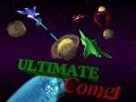

*UPDATES*
Version 2.0 has been released as an executable download for Windows XP, Vista, and 7 on the
google code site - July 30, 2010
Version 2.0 has been updated to the google code repository. - July 28, 2010
This new release includes:
- Drastically improved graphics through Blender
- Improved sound effects
- New smooth menu user interface influenced by my iphone programming experience
- Ability to enter high score names
- All new singleplayer mode: Star Fleet
- Customizable controls (this means you, gamepad users)
- New options allow fullscreen/windowed, volume control, control configuration
- Gosu logo intro (made it myself)
- Are you still reading this? Go download it.
This is a one to four player space shooter game created with Ruby designed for a number of different battle or adventure modes.
Go to the Google Code
project home page for downloading and more information.
This isn't a simple, written-in-a-few-seconds type of Gosu game. I spent a while on it making music, sound effects, images, and a whole lot of fun code to play around with. Hopefully, those of you who try it out will be entertained.
I had fun making and playing this game with help from my brother; I'm relatively new to programming.
(Edit) not so new to programming anymore - July 2010